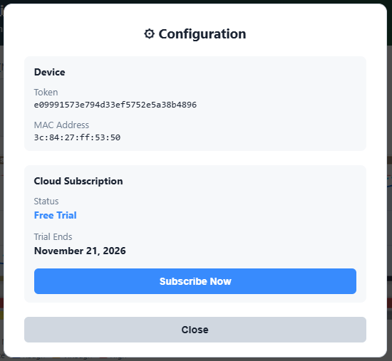
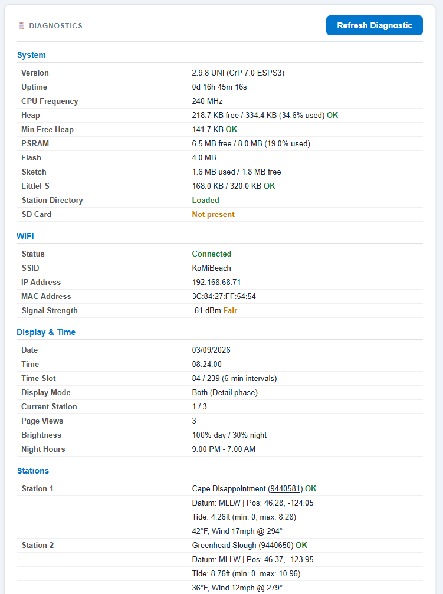
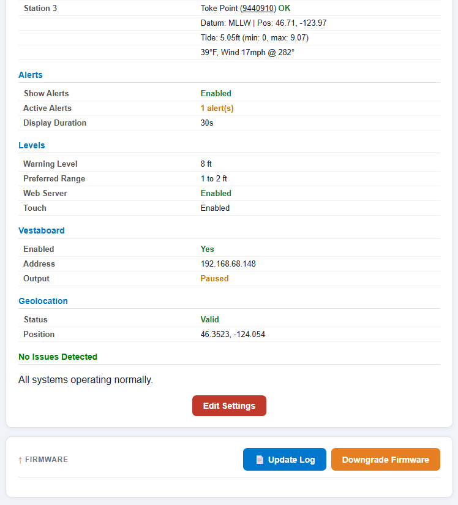
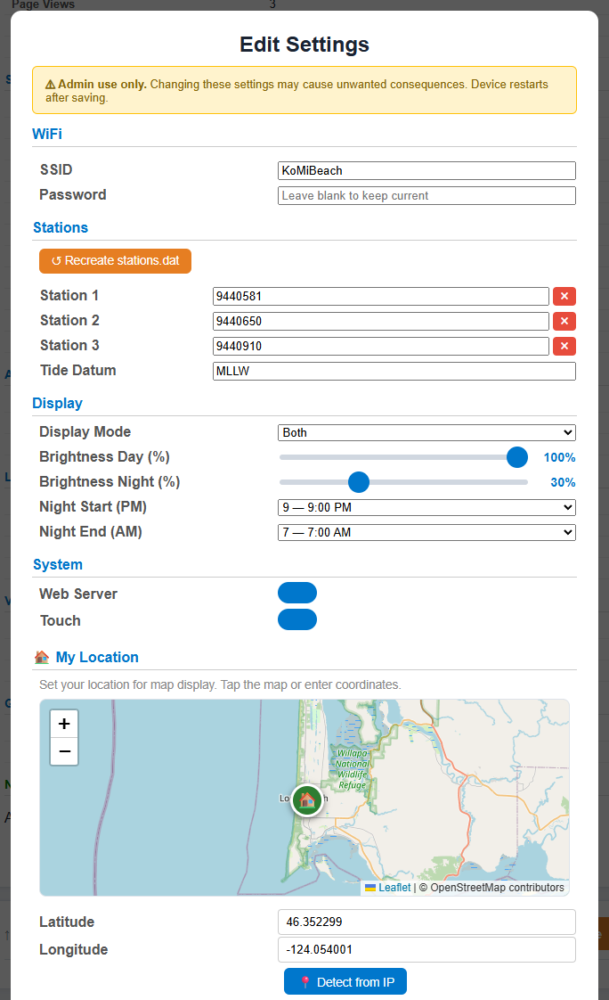
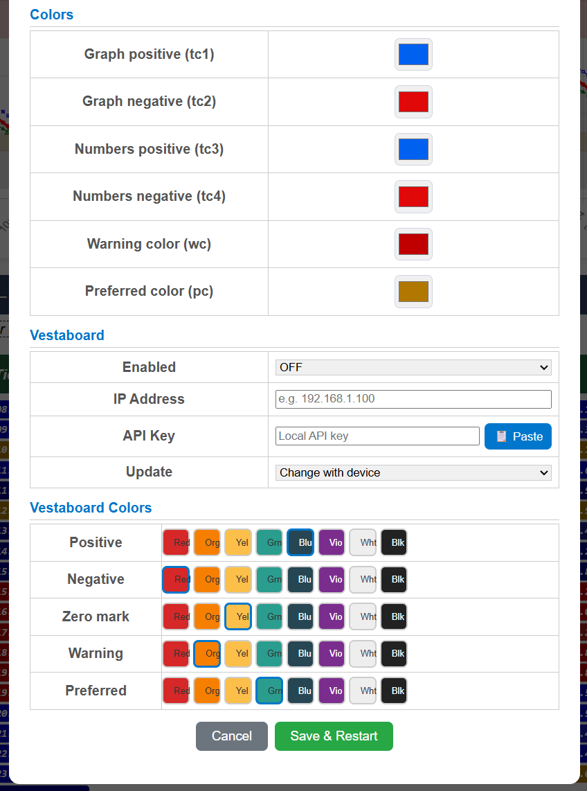
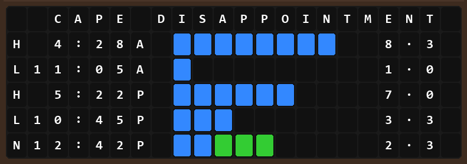
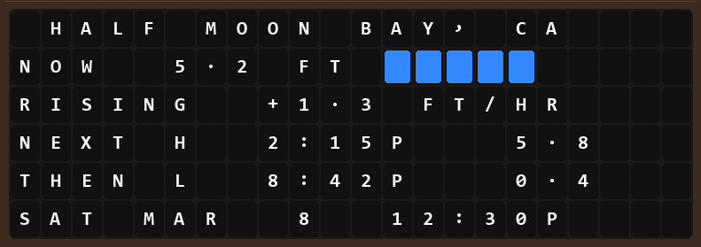
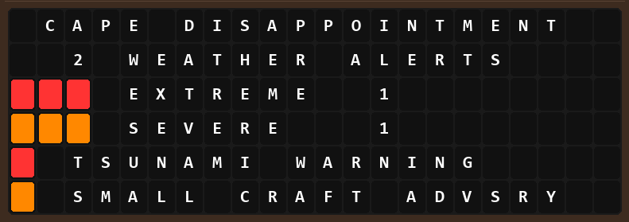

Admin panel and technical details for advanced users
Navigate to http://tidesy.local/admin (or http://<device-IP>/admin) in your browser.
The admin panel header shows key device information:
Additional diagnostic tools:
/diagnostic JSON response.
1 2 3 4 5The admin settings form provides access to all the same settings as the setup wizard, plus additional options. Changes are applied immediately when you tap Save.
The Load Diagnostic button expands a detailed view of all system parameters:

System info (version, heap, PSRAM, LittleFS, SD card), WiFi status, display/time info, and station details with current tide values.

Alert settings, tide levels, Vestaboard status, geolocation, system health check, and the Edit Settings button.
The Edit Settings overlay provides full access to all device configuration:

WiFi, Stations (with Recreate stations.dat), Display mode and brightness sliders, System toggles, My Location with interactive map picker.

Alert toggle and delay slider, Tide Level sliders, Color pickers, Vestaboard settings (IP, API key, interval, tile colors), and Save & Restart button.
When connected, Tidesy cycles through three views on the Vestaboard:

Detail — Tide schedule with H/L times, values, and color bar graph.

Large — Current tide, rise/fall rate, next H/L, and date.

Alerts — Active alerts with severity and event names.
| Action | Button | What It Does |
|---|---|---|
| Restart Device | Restart | Reboots the firmware. Settings are preserved. |
| Factory Reset | Factory Reset | Erases all preferences including per-SSID saved locations. Device restarts into setup hotspot mode. |
| Check for Update | Check Update | Checks the CDN manifest for available firmware updates. |
| Install Update | Install | Downloads and installs a firmware update via OTA. |
| Downgrade Firmware | Version selector | Select and install an older firmware version from the CDN. |
The admin panel includes a firmware version selector that lists previous versions. Select an older version and confirm to downgrade. This downloads and installs the selected version via OTA.
You can also update firmware by placing a .bin file on a microSD card:
.bin file to the root of a FAT32-formatted microSD card.All firmware updates are recorded in a log stored on the device. Each entry includes the date, version number, whether it was mandatory, and the source (OTA or SD card). View the log via the admin panel’s “Update Log” button.
| Key | Type | Default | Description |
|---|---|---|---|
ssid | String | "" | WiFi network name |
password | String | "" | WiFi password (AES-128 encrypted) |
station1 | String | "" | NOAA station ID (slot 1) |
station2 | String | "" | NOAA station ID (slot 2) |
station3 | String | "" | NOAA station ID (slot 3) |
datum | String | "MLLW" | Tide datum reference |
displaymode | String | "detail" | "detail", "large", or "both" |
brightness | Int | 80 | Day brightness (1-100) |
nightbright | Int | 20 | Night brightness (0-100) |
nightstart | Int | 10 | Night start hour (PM, 0-12) |
nightend | Int | 6 | Night end hour (AM, 0-12) |
showalerts | Bool | true | Show NWS weather alerts |
alertdelay | Int | 30 | Alert display duration (10-60 sec) |
warnlevel | Float | 0 | Warning tide level (-10 to 30 ft) |
preflevel1 | Float | 0 | Preferred range start (-10 to 30 ft) |
preflevel2 | Float | 0 | Preferred range end (-10 to 30 ft) |
latitude | Float | 0 | Home latitude |
longitude | Float | 0 | Home longitude |
webserver | Bool | true | Enable web dashboard |
vbinterval | String | "change" | VB update interval |
ss | String | "0" | Screenshot mode ("0" = off, "1" = on) |
dmsgIds | String | "" | Comma-separated dismissed cloud message IDs |
sLoc0–sLoc4 | String | "" | Per-SSID location: saved SSID name (5 slots) |
sLa0–sLa4 | String | "" | Per-SSID location: saved latitude (5 slots) |
sLo0–sLo4 | String | "" | Per-SSID location: saved longitude (5 slots) |
| Path | Method | Purpose |
|---|---|---|
/ | GET | Main dashboard (tide data, weather, alerts, map) |
/admin | GET | Admin panel (diagnostics, system actions) |
/admin-settings-form | GET | Admin settings form HTML |
/admin-save-settings | POST | Save admin settings |
/diagnostic | GET | JSON diagnostic data |
/fetch-stations | GET | Download/refresh station directory |
/station-check | GET | Check if station directory exists |
/search-stations | GET | Search station directory |
/dismiss-update | GET | Dismiss post-update notification |
/dismiss-message | GET | Dismiss a cloud message by ID (?id=...) |
/ota-status | GET | OTA progress JSON (status, progress, error) |
/restart | GET | Restart the device |
/factory_reset | GET | Factory reset with confirmation page. Can be typed directly into any browser address bar while on the same network. |
/update | GET | Firmware update page |
These endpoints are only available when the device is in setup hotspot mode (192.168.4.1):
| Path | Method | Purpose |
|---|---|---|
/saved-location | GET | Retrieve saved location for an SSID (?ssid=...) |
/geolocate | GET | IP-based geolocation via ip-api.com |
/verify-wifi | POST | Test WiFi credentials and return assigned IP |
/save-config | POST | Save all setup wizard settings |
| Source | Data | URL Pattern |
|---|---|---|
| NOAA Tides & Currents | Tide predictions (6-min intervals) | tidesandcurrents.noaa.gov/api/datagetter |
| National Weather Service | Active weather alerts | api.weather.gov/alerts/active |
| MET Norway | Temperature, wind speed/direction | api.met.no/weatherapi/locationforecast/2.0/compact |
| ip-api.com | IP-based geolocation | ip-api.com/json/ |
The station directory is stored in /stations.dat on the device’s LittleFS filesystem. Each line contains one station:
ID|Name|State|Latitude|LongitudeExample:
9414131|Half Moon Bay, CA|CA|37.5024|-122.4828
9414290|San Francisco, CA|CA|37.8063|-122.4659| Field | Description |
|---|---|
version | Firmware version string |
build | Build number (4-digit, zero-padded) |
uptime | Seconds since last boot |
heap | Free heap memory in bytes |
rssi | WiFi signal strength in dBm |
ip | Device IP address |
mac | Device MAC address |
ssid | Connected WiFi network name |
littlefs_used | LittleFS bytes used |
littlefs_total | LittleFS total capacity |
sd_present | Whether an SD card is inserted |
station_file | Whether stations.dat exists |
Tidesy can capture BMP screenshots of the display to an SD card. This is a developer/diagnostic feature available on models with display readback capability.
| Model | Method | Supported |
|---|---|---|
| TidesyL / TidesyM | PSRAM framebuffer readback (LovyanGFX) | Yes |
| TidesyS | ILI9341 SPI readback (SDO connected) | Yes |
| TidesyINK | E-paper shadow buffer capture | Yes |
| TidesyS+ | ILI9488 SDO not connected | No (hardware limitation) |
Screenshots are enabled via the admin diagnostics panel. When an SD card is detected, Take Screenshots and Stop Screenshots buttons appear. Screenshots are captured automatically at each display refresh cycle.
When screenshots are active, a SCR badge (white text on dark green background) appears on the display near the countdown timer. The badge is automatically hidden during the actual screenshot capture to avoid appearing in the saved image.
The SCR badge appears to the left of other status badges. Here shown alongside the DST badge and countdown timer.
If an SD card is inserted while the device is running, opening or refreshing the diagnostics page will detect and initialize the card. The screenshot buttons will then become available.
If the SD card is removed while screenshots are active, the next screenshot write will fail. When this happens:
ss preference is set to "0".To resume, insert a new SD card and re-enable screenshots from the diagnostics panel.
Screenshots are saved as BMP files with the naming pattern: /{view}_{device}_{NNNN}.bmp
detail, large, alert)crow7, crow5, cyd, crep42)NOAA tide predictions use the lst_ldt time zone (local standard/daylight time). On DST transition days, the number of 6-minute predictions changes:
Instead of assigning predictions by array index (which causes misalignment), Tidesy parses each prediction’s timestamp to compute the correct display slot:
slot = hour × 10 + minute / 6This ensures predictions always map to the correct time position on the graph regardless of DST transitions.
When a gap is detected (slot jumps by more than 1), the missing slots are filled with the last valid value. The graph renders these gap slots with a red line and a dimmed fill color (50% darkened version of the normal color).
When a timestamp maps to a slot at or before the previous slot, Tidesy detects a fall-back duplicate and skips those entries. A red line segment marks the transition point on the graph.
A DST badge (white text on red background) appears on the detail view during any day where a DST transition is detected. This badge is visible only in the detail view.
| Field | Type | Description |
|---|---|---|
dstGapStart | int | First slot in the spring-forward gap (-1 = no gap) |
dstGapEnd | int | First slot after the gap |
dstStepSlot | int | Slot where the fall-back step occurs (-1 = no step) |